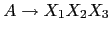
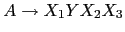

Dentro de las acciones los atributos de la parte derecha de la regla de producción
 se pasan como parámetros en
se pasan como parámetros en $_[1], $_[2], etc.
La notación posicional para los atributos puede ser inconveniente si el número de símbolos es grande.
También puede resultar inconveniente durante la fase de desarrollo:
Puede ocurrir que hemos escrito la regla

y la acción semántica (por ejemplo { $f = $_[1]*$_[3]+$_[2]; $_[2] }
y - en determinado momento - nos damos cuenta que debemos cambiar la regla añadiendo
un nuevo símbolo

o suprimiendo alguno que ya existía.
O quizá queremos insertar una
acción en algún lugar intermedio de la regla. O quizá reordenamos los símbolos en
la parte derecha. En todos estos caso nos encontramos en la
situación de que debemos reenumerar todos los argumentos dentro de la acción
semántica. En el ejemplo anterior tendríamos que reescribir la acción como:
{ $f = $_[1]*$_[4]+$_[3]; $_[3] }
Para tratar con esta situación eyapp provee mecanismos para darle nombres a
los atributos semánticos asociados con los símbolos. Uno de esos mecanismos
es prefijar el símbolo con un dolar. Ello indica que el nombre del símbolo
puede ser usado dentro de la acción como nombre del atributo asociado.
Por ejemplo, el código en la línea 22 imprime el atributo asociado
con la variable sintáctica expr, que en este caso es su valor numérico.
La otra notación usada para darle nombres a los atributos consiste
en concatenar el símbolo en la parte derecha de la regla de un punto seguido
del nombre del atributo
(el código completo figura en el apéndice en la página ![[*]](crossref.png) ):
):
26 exp:
27 NUM
28 | $VAR { $s{$VAR} }
29 | VAR.x '=' exp.y { $s{$x} = $y }
30 | exp.x '+' exp.y { $x + $y }
31 | exp.x '-' exp.y { $x - $y }
32 | exp.x '*' exp.y { $x * $y }
33 | exp.x '^' exp.y { $x ** $y }
34 | exp.x '/' exp.y
35 {
36 my $parser = shift;
37
38 $y and return($x / $y);
39 $parser->YYData->{ERRMSG}
40 = "Illegal division by zero.\n";
41 $parser->YYError;
42 undef
43 }
44 | '-' $exp %prec NEG
45 { -$exp }
46 | '(' $exp ')'
47 { $exp }
48 ;
El atributo asociado con start (línea 12) es una referencia a
un par. El segundo componente del par es una referencia a la tabla de símbolos.
El primero es una referencia a la lista de valores resultantes de la evaluación
de las diferentes expresiones.
pl@nereida:~/LEyapp/examples$ cat -n CalcSimple.eyp
1 # CalcSimple.eyp
2 %right '='
3 %left '-' '+'
4 %left '*' '/'
5 %left NEG
6 %right '^'
7 %{
8 my %s;
9 %}
10
11 %%
12 start: input { [ $_[1], \%s] }
13 ;
14
15 input:
16 /* empty */ { [] }
17 | input line { push(@{$_[1]},$_[2]) if defined($_[2]); $_[1] }
18 ;
La línea 17 indica que el atributo asociado con la variable
sintáctica input es una referencia
a una pila y que el atributo asociado con la variable sintáctica
line debe empujarse
en la pila.
De hecho, el atributo asociado con line es el valor
de la expresión evaluada en esa línea. Asi pues el atributo retornado por input es
una referencia a una lista conteniendo los valores de las expresiones
evaluadas. Observe que expresiones erróneas no aparecerán en la lista.
20 line:
21 '\n' { undef }
22 | $exp '\n' { print "$exp\n"; $exp }
23 | error '\n' { $_[0]->YYErrok; undef }
24 ;
Veamos el código del analizador léxico:
50 %%
51
52 sub _Error {
.. .............................
62 }
63
64 my $input;
65
66 sub _Lexer {
67 my($parser)=shift;
68
69 # topicalize $input
70 for ($input) {
71 s/^[ \t]//; # skip whites
72 return('',undef) unless $_;
73 return('NUM',$1) if s{^([0-9]+(?:\.[0-9]+)?)}{};
74 return('VAR',$1) if s/^([A-Za-z][A-Za-z0-9_]*)//;
75 return($1,$1) if s/^(.)//s;
76 }
77
78 return('',undef);
79 }
80
81 sub Run {
82 my($self)=shift;
83
84 $input = shift;
85 return $self->YYParse( yylex => \&_Lexer, yyerror => \&_Error,
86 #yydebug => 0xF
87 );
88 }
Las entradas pueden contener errores.
El lenguaje eyapp proporciona un token especial,
error, que puede ser utilizado en el programa fuente
para extender el analizador con producciones de error
que lo dotan de cierta capacidad para
recuperase de una entrada errónea y poder continuar
analizando el resto de la entrada.
20 line:
21 '\n' { undef }
22 | $exp '\n' { print "$exp\n"; $exp }
23 | error '\n' { $_[0]->YYErrok; undef }
24 ;
Cuando se produce un error
en el análisis, eyapp emite un mensaje de error (Algo
como "syntax error") y
produce ``mágicamente'' el terminal especial denominado
error. A partir de ahí permanecerá silencioso,
consumiendo terminales hasta encontrar una
regla que sea capaz de consumir el terminal error.
La idea general es que, a traves de la regla
de recuperación de errores de la línea 23 se
indica que cuando se produzca un error
el analizador debe descartar todos los tokens hasta llegar a un
retorno de carro.
Además, mediante la llamada al método $_[0]->YYErrok el programador
anuncia que, si se alcanza este punto, la recuperación puede considerarse ''completa'' y que
eyapp puede emitir a partir de ese momento mensajes de error
con la seguridad de que no son consecuencia de un comportamiento inestable
provocado por el primer error.
Observemos la regla:
26 exp: 27 NUMLa acción por defecto es retornar
$_[1].
Por tanto, en el caso de la regla de la línea 27
el valor retornado es el asociado a NUM.
La calculadora usa un hash léxico %s como tabla de símbolos.
Cuando dentro de una expresión encontramos una alusión a una variable
retornamos el valor asociado $s{$_[1]} que ha sido guardado en la correspondiente
entrada de la tabla de símbolos:
. ...
7 %{
8 my %s;
9 %}
.. ...
11 %%
.. ...
26 exp:
27 NUM
28 | $VAR { $s{$VAR} }
29 | VAR.x '=' exp.y { $s{$x} = $y }
30 | exp.x '+' exp.y { $x + $y }
.. ...
En la regla de la división comprobamos que el divisor es distinto de cero.
34 | exp.x '/' exp.y
35 {
36 my $parser = shift;
37
38 $y and return($x / $y);
39 $parser->YYData->{ERRMSG}
40 = "Illegal division by zero.\n";
41 $parser->YYError;
42 undef
43 }
El método YYData provee acceso a un hash que se maneja
como una zona de datos para el programa cliente.
En el ejemplo usamos una entrada ERRMSG para alojar
el mensaje de error.
Este mensaje es aprovechado por la subrutina de tratamiento de errores:
52 sub _Error {
53 my $private = $_[0]->YYData;
54
55 exists $private->{ERRMSG}
56 and do {
57 print $private->{ERRMSG};
58 delete $private->{ERRMSG};
59 return;
60 };
61 print "Syntax error.\n";
62 }
La subrutina _Error es llamada
por el analizador sintáctico
generado por eyapp cada vez que ocurre un error
sintáctico. Para que ello sea posible
en la llamada
al analizador se especifican quienes son la rutina de análisis
léxico y quien es la rutina a llamar en caso de error:
$self->YYParse( yylex => \&_Lexer, yyerror => \&_Error );
Veamos los contenidos del ejecutable usecalcsimple.pl el cuál
utiliza el módulo generado por eyapp:
pl@nereida:~/LEyapp/examples$ cat -n usecalcsimple.pl
1 #!/usr/bin/perl -w
2 use strict;
3 use CalcSimple;
4 use Carp;
5
6 sub slurp_file {
7 my $fn = shift;
8 my $f;
9
10 local $/ = undef;
11 if (defined($fn)) {
12 open $f, $fn
13 }
14 else {
15 $f = \*STDIN;
16 }
17 my $input = <$f>;
18 return $input;
19 }
20
21 my $parser = CalcSimple->new();
22
23 my $input = slurp_file( shift() );
24 my ($r, $s) = @{$parser->Run($input)};
25
26 print "========= Results ==============\n";
27 print "$_\n" for @$r;
28 print "========= Symbol Table ==============\n";
29 print "$_ = $s->{$_}\n" for sort keys %$s;
Veamos una ejecución:
pl@nereida:~/LEyapp/examples$ cat prueba.exp a=2*3 b=a+1 pl@nereida:~/LEyapp/examples$ usecalcsimple.pl prueba.exp 6 7 ========= Results ============== 6 7 ========= Symbol Table ============== a = 6 b = 7La primera aparición de la cadena
"6\n7" es debida a la acción print en el cuerpo
de la gramática. La segunda es el resultado de la línea 27 en el programa cliente.